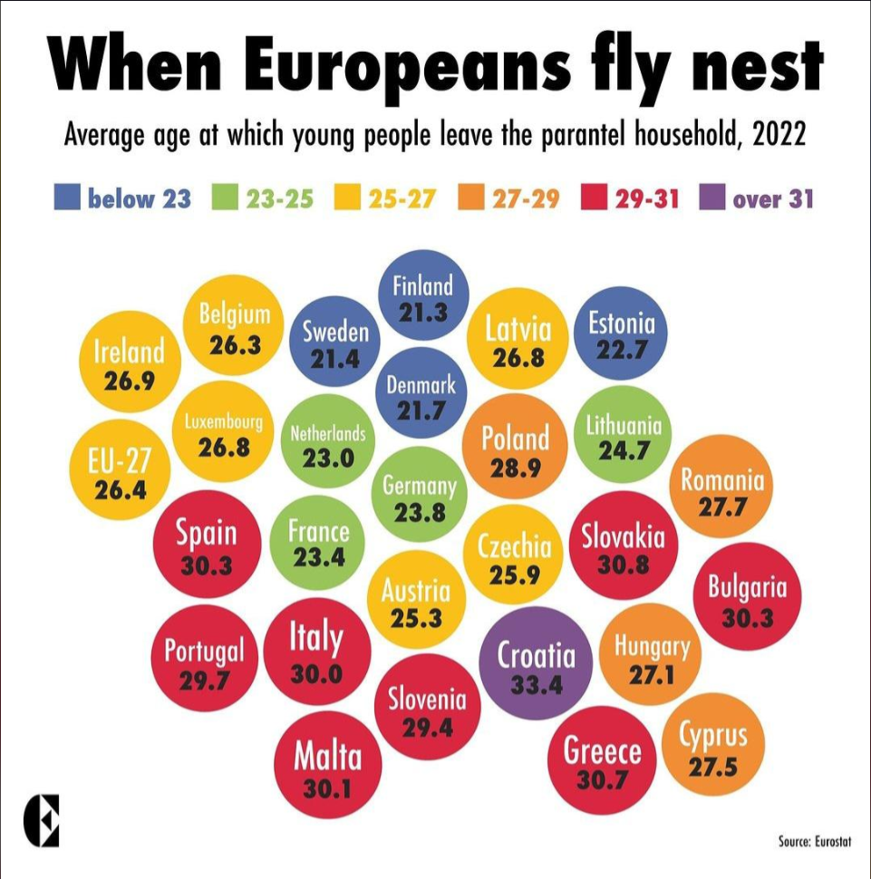

Assignment 2
For this assignment, we were tasked with finding a bad data visualization example and fixing it up.
The visualization the I found was posted on the r/dataisugly subreddit by user u/MrCaracara. The data depicts the average age that children normally leave their childhood home in the Eurpoean Union. However the visualizations is, as the subreddit's name would suggest, ugly. The choice to use colored balls to respresent the different countries is not a very good decision. Here is the visualization now:
The reason I think this data visualization looks better than the original is because it shows where all the countries are. Also, you can give it a quick glimspe and still understand it or, if you want to get more in depth, you can hover over the points on the map to show you what each age would be. The color of the map makes each point pop out more and every point is included in the map itself. This could've been done in a bar chart or histogram or something similar, but using a map of Europe really helps show what the data is trying to convey.